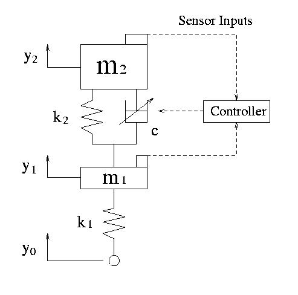

車両にはリンク機構とバネやダンパから構成されるサスペンションシステムが搭載されている． その目的は，路面外乱などによる振動を絶縁し良好な乗り心地を確保すること， 操縦時の操縦安定性を保持すること，運転姿勢の変化をできるだけ押さえることがあげられる． この目的のために受動的要素のみで構成されるパッシブサスペンションが使われてきたが， パッシブサスペンションでは上の３つの目的のうち先に述べた２つは相反するものとなってしまう．そこで， サスペンションをアクティブに制御する，アクティブサスペンションについての研究が行われ， 様々な制御手法が提案されている．
しかし，アクティブサスペンションは「力」を制御入力とするためエネルギー消費が激しい． また，基本的に油圧または空気圧アクチュエータを必要とするため，高価で大型の装置にになってしまう． それに対し，ダンパ係数を変化させることで車体の動きを制御する「セミアクティブサスペンション」の場合， アクティブサスペンションに比べて作りが簡単で安価であり， エネルギーの消費が少なくて済むという利点があり，セミアクティブサスペンションはより実用的であるといえる． しかし，セミアクティブサスペンションの場合， システムが双線形といわれる非線形系となるため制御手法が限られたものになる．
本研究では，セミアクティブサスペンションシステムに対し， ハミルトン・ヤコビ不等式に基づく非線形H∞制御理論を適用する． しかし，ハミルトン・ヤコビ不等式を一般に解く方法は提案されていない． 本研究では，システムが持つ非線形性である双線形性の性質を利用して， ハミルトン・ヤコビ不等式を満たす解をリッカチ方程式の解に帰着させている．
投稿論文・学会発表
- 三平満司，大作覚，上村一整，"非線形H∞制御理論の限界と可能性─セミアクティブサスペンションへの応用"，システム/制御/情報，1999
- 大作覚，三平満司，清水悦郎，富田晃市，"非線形H∞制御によるセミアクティブサスペンション"，計測と制御，2000